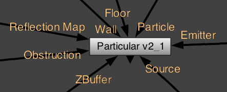
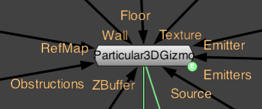
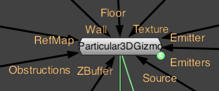

Input Ports for Particular
There are eight unique input ports for the Particular process node, along with the standard output port. The Particle/Texture, Emitter and Source ports are used a lot. The Floor and Wall ports are used less often. Somewhat hidden in the stack of ports are Reflection Map, Obstruction and ZBuffer.
 

At left, the Particular plug-in inputs. At right, the Particular 3D Gizmo inputs.
The input ports for the Particular node are used to control the RGBA output of the particles.
• Source selects the image node which Particular will be placed over if you change the Rendering tab> Transfer Mode to an option other than None.
• Emitter selects the image node you want the Layer Emitter to use. The Layer Emitter group uses the Emitter input port. With this port attached to the output of an image node, the RGBA data is used for the Layer Emitter. You can then influence the parameters of the Layer Emitter within Particular.
• Emitters is an input used by the Gizmo which is preattached to an Emitter node. The input is used by the Gizmo when finding nodes to use as an Emitter Proxy.
• Particle or Texture selects the image node you want the Particle tab> Texture group to use. The Texture group uses the Particle input port. With this port attached to the output of an image node, the RGBA data is used for the Texture. You can then influence the parameters of the Texture within Particular.
• Floor and Wall selects the image node you want to use for the Floor and Wall functions in the Physics tab> Bounce group. RGB information is not used for these two inputs, only the alpha channel, and only when alpha is turned on for the Floor and Wall. The properties of these inputs are controlled from within Particular.
• Reflection Map or RefMap uses the RGB of an image node to control the color of particles. This node requires the Shading tab to be turned on and the Particle Type to be Textured Polygons. It is affected by the Shading tab> Reflection Strength control.
• Obstruction or Obstructions uses the alpha channel of an image to block particles. The controls for the location of the Obstruction node are in the Visibility tab> Obscuration Transform group.
• ZBuffer uses a black and white depth matte to control the visibility of particles. It takes an RGB input and works with the Visibility tab. If your depth matte is in a different channel, it may be necessary to use a shuffle node before passing it into the Particular node.
Workflow tips
The Image> Constant node can be very helpful when working with Particular. If you attach a Constant to a Particular node, then disable the Constant, you can disable any nodes that you don't plan on using in in your composition. Doing so helps to avoid unexpected effects. This method also lets you get to the input nodes that are hidden in the Particular node stack.
Particular uses 2D image nodes only for all its inputs. If you want to use a 3D node to control a property in Particular, you have to use an expression to link the properties. Read more on this 3D Nuke Page.